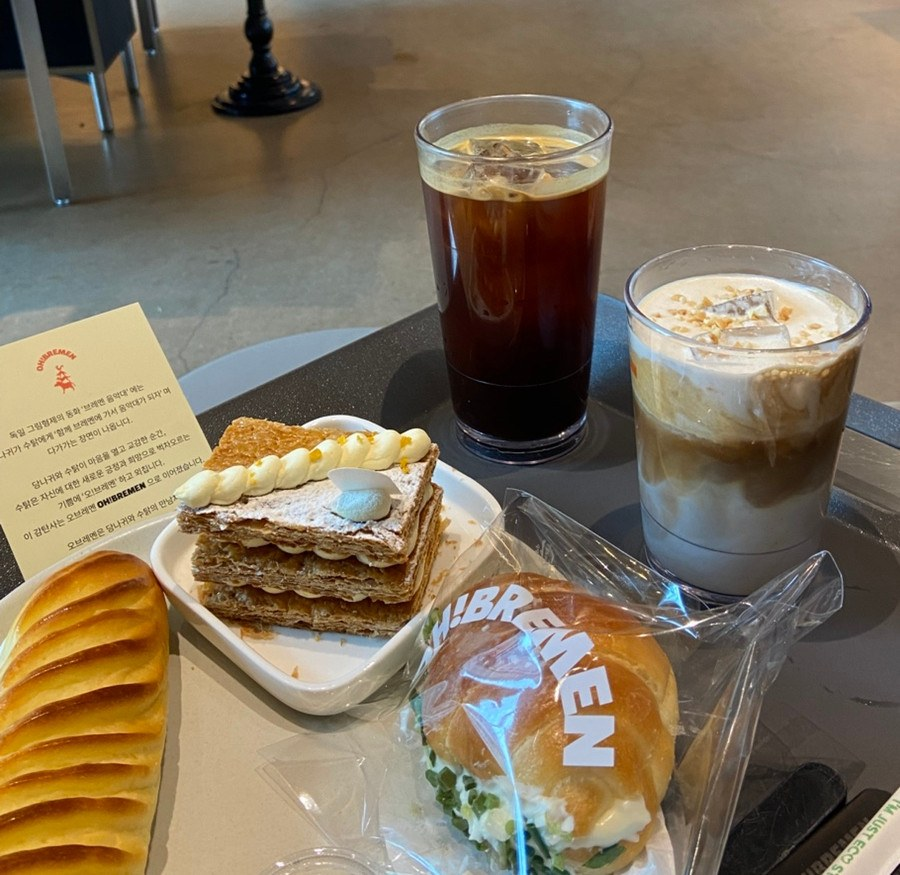
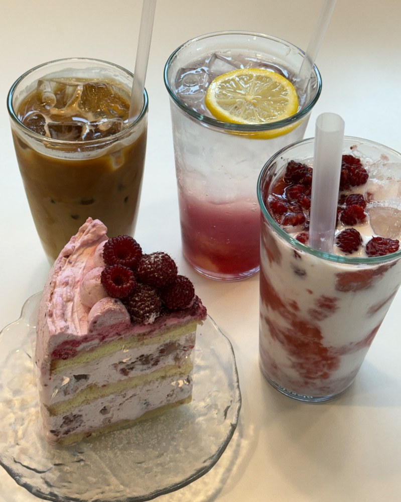
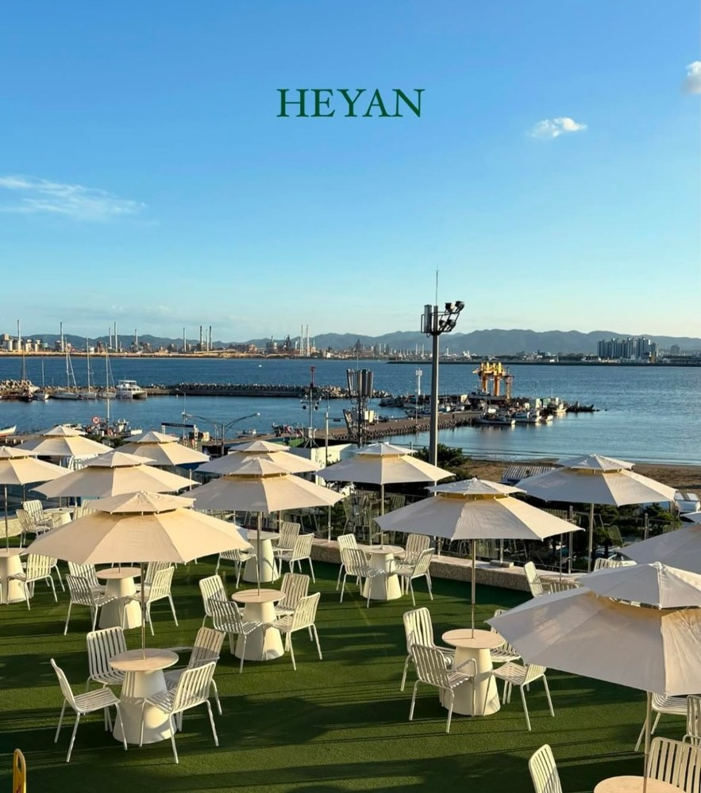
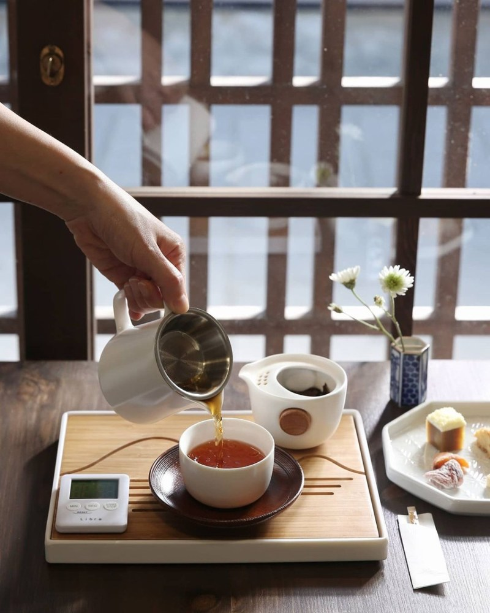
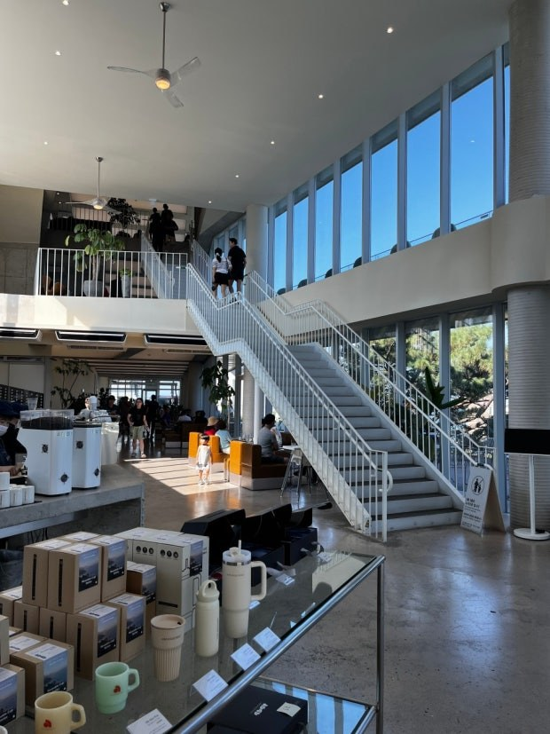

POHANG FOOD MAP
POHANG FOOD MAP
POHANG FOOD MAP
POHANG FOOD MAP
포항 바다와 함께 쉬어가기 좋은 카페를 모았습니다.

회전목마 포토존과 바다뷰가 있는 대형 베이커리 카페입니다.
📍 경북 포항시 북구 해안로 191-1

케이크와 디저트가 유명한 영일대 근처 카페입니다.
📍 경북 포항시 북구 해안로 243-2

영일대 바다를 보며 커피와 빵을 즐길 수 있는 대형 카페입니다.
📍 경북 포항시 북구 해안로 219

구룡포에서 고즈넉한 분위기와 차를 즐기기 좋은 찻집입니다.
📍 경북 포항시 남구 구룡포읍 구룡포길 143-1 1층

탁 트인 바다뷰와 디저트가 돋보이는 포항 오션뷰 카페입니다.
📍 경북 포항시 북구 송라면 동해대로 3310

흥해 오도리 바다 앞에서 넓은 공간과 오션뷰를 즐길 수 있습니다.
📍 경북 포항시 북구 흥해읍 해안로 1804